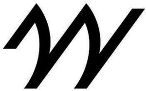

Trade Mark Journal No.2025/021 23 May 2025
WO0000001831435 (3,9,14,16,18,25,28,35,41)
Office of origin: European Union Intellectual Property Office (EUIPO)
Date of International Registration:11 September 2024
Date of designation in the UK:
11 September 2024

International priority date claimed: 11 March 2024
(European Union Intellectual Property Office (EUIPO))
(018997306)
- Class 3
- Non-medicated cosmetics and toiletry preparations; perfumery, essential oils; fragrances for personal use; eau de Cologne; eau de parfum; toilet water; scented water; perfumes; extracts of perfumes; non-medicated body care and cleansing preparations; non-medicated body lotions, milks and creams; deodorants for personal use; antiperspirants for personal use; non-medicated soaps; non-medicated soaps for personal use; non-medicated soaps in liquid, solid or gel form for personal use; non-medicated bath gel; non-medicated shower gel; non-medicated bath preparations; non-medicated bath salts; non-medicated skin care preparations; exfoliants; talcum powder, for toilet use; perfumed powders; wipes, cotton and cloths impregnated with non-medicated cosmetic lotions and for perfuming; non-medicated cosmetics, non-medicated toiletries and perfumery for the care and beauty of the eyelashes, eyebrows, eyes, lips and nails; non-medicated lip balm; nail polish; nail polish removers; adhesives for cosmetic use; non-medicated cosmetic preparations for slimming purposes; non-medicated hair preparations and treatments; non-medicated shampoos; make-up products; make-up removing products; non-medicated shaving preparations; non-medicated pre-shaving preparations; non-medicated after-shave preparations; non-medicated beauty preparations; non-medicated cosmetic sun-tanning and self-tanning preparations; cosmetic kits primarily containing mascara, eye shadows, eye pencils, blushers, lipsticks, eyebrow pencils, make-up, foundation and lip glosses; household fragrances; incense; aromatic potpourris; scented wood; products for perfuming linen; aromatic extracts.
- Class 9
- Optical devices, magnifiers and correctors; Optical enhancers; optical goods; eyewear; correcting lenses; spectacles; sunglasses; clip-on sunglasses; contact lenses; lenses, glasses, frames, sidepieces, chains and cords for spectacles and sunglasses; covers and cases adapted for optical apparatus and products; covers and cases for spectacles, sunglasses, contact lenses and correcting lenses; holders for spectacles and sunglasses; covers, carriers and bags adapted for computers, tablets, telephones, electronic agendas, radios and portable media players.
- Class 14
- Precious metals and their alloys; horological and chronometric instruments; imitations of precious stones and of precious metals; pearls and their imitations; jewelry cases; jewelry rolls for travel; watches and clocks and parts therefor; watch bands; watch chains; cases and boxes for horological articles, watches and clocks; medals; coins; boxes and cases of precious metal, their alloys and their imitations; statues, figures and ornaments, made of or coated with precious or semi-precious metals, their alloys and their imitations; statues, figures and ornaments, made of or coated with pearls, precious or semi-precious stones, and imitations thereof; works of art of precious stones and of precious metals; trophies made of precious metals.
- Class 16
- Paper and cardboard; printed matter; photographs; stationery and office requisites, except furniture; instructional and teaching materials; plastic bags for wrapping and packaging; works of art, ornaments and figurines of paper or cardboard, and architects' models; printed publications; books, magazines [periodicals] and newspapers; writing articles; fountain pens and pens; bags of paper or cardboard for packing, wrapping and storage.
- Class 18
- Leather and imitations of leather; Animal skins and hides; luggage and carrying bags; umbrellas and parasols; walking sticks; whips, harness and saddlery; collars, leashes and clothing for animals; bags, briefcases and other carriers; frames, handles and straps for luggage, carrying bags, bags, briefcases and other carriers; handbags; evening bags; re-usable shopping bags; net bags for shopping; pouches; duffel bags; rucksacks; school bags; fanny packs; canvas bags; shoulder bags; baby carriers worn on the body and reins for guiding children; cosmetic and vanity cases and purses, not fitted; traveling cases [leatherware]; cases of leather or leatherboard; garment bags, carriers for suits, shirts and dresses; tie cases; carrying cases for documents; portfolios; purses; chain mesh purses; wallets; key cases; card holders; credit card cases; boxes of leather or leatherboard; laces and straps of leather; umbrella and parasol covers; rings, handles, sticks, frames and ribs for umbrellas and parasols; walking stick handles; covers and wraps for animals; leatherboard; fur and leather and imitations thereof, unworked, worked or semi-worked.
- Class 25
- Clothing, footwear, headwear; formal footwear; casual footwear; footwear for sports; beach shoes; work shoes; rain shoes; bath shoes; indoor footwear; dance shoes; baby shoes; hats; caps and peaked caps; berets; hoods; visors; cap peaks; turbans; frilled caps; mantillas; wimples; toques [hats]; veils; headbands (clothing); cuffs [clothing]; inner socks for footwear; shirt yokes; coats; layettes [clothing]; bathrobes; anoraks; eye masks; neckwear; bibs, not of paper; sashes for wear; sweatbands; dressing gowns; overalls; robes; bathing suits; bikinis; Bermuda shorts; blazers; blouses; boas; pockets for clothing; scarves; caftans; socks and stockings; body warmers (clothing); shirts; T-shirts; nightgowns; hooded sweaters; capes; blousons; waistcoats; shawls and stoles; jackets; morning coats; tracksuits; stuff jackets; belts (clothing); petticoats; twin sets; combinations [clothing]; neckties; bustiers; corsets; aprons; tuxedos; skirts; foulards; gabardines; gloves (clothing); jerseys; lingerie; leotards and tights; garters; muffs (clothing); mantles; shawls; mittens; work overalls; jump suits; money belts (clothing); ear muffs; bow ties; trousers; beach wraps; parkas; balaclavas; kerchiefs (clothing); pocket squares (clothing); shoulder scarves; head scarves; bandanas [neckerchiefs]; shirt fronts; pelisses; dungarees; jumper dresses; furs [clothing]; pyjamas; polo shirts; ponchos; evening wear; sportswear; garments for protecting clothing; knitwear; denim clothing; babies' undergarments; waterproof clothing; pullovers; kimonos; cardigans; ready-made clothing; clothing of leather; clothing of imitations of leather; maternity clothing; children's clothing; baby clothing; paper clothing; beach clothes; outer clothing; clothing made of fur; casual wear; underwear; motorists' and motorcyclists' clothing; negligees; saris; sarongs; over-trousers; overcoats; sweatshirts; thongs; togas; tops [clothing]; suits; duffel coats; tunics; uniforms; dresses; evening gowns; wedding dresses; men's suits; evening suits; women's suits; ballet suits; christening robes; loungewear; weatherproof clothing.
- Class 28
- Games and toys; video game apparatus; gymnastic and sporting articles.
- Class 35
- Retail and wholesale services provided via shops, via global computer networks, by mail order and catalogue, in relation to the following goods: soaps, perfumery, cosmetics, beauty products, hygiene products, pharmaceuticals; retail and wholesale services provided via shops, via global computer networks, by mail order and catalogue of the following goods: spectacles, jewelry, precious stones, timepieces, clothing, footwear, headwear, fashion accessories, furs, imitation fur, animal skins, trunks, bags and suitcases; retail and wholesale services provided via shops, via global computer networks, by mail order and catalogue, in relation to the following goods: umbrellas and parasols, saddlery, gymnastic and sporting articles, stationery items.
- Class 41
- Education; Training; entertainment services; sporting and cultural activities; organization, arranging and conducting of regatta races and other nautical competitions; publishing services; electronic publications (not downloadable); organization of exhibitions for cultural or educational purposes; organization and direction of colloquiums; organization and direction of conferences; organization and direction of entertainment events; organization and direction of sports events.
ANTONIO PUIG, S.A.
Representative: Boult Wade Tennant LLP, Salisbury Square House, 8 Salisbury Square London EC4Y 8AP UNITED KINGDOM